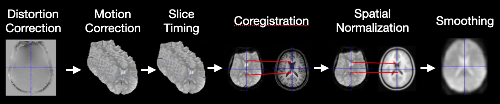

Data Preprocessing

Welcome to the NeuroNest tutorial on Data Preprocessing for Neuroimaging Data!
Tutorial Time: 40 min
In this tutorial, we'll cover several fundamental concepts essential for cleaning and preparing neuroimaging data for analysis. We will focus on MRI data, highlighting techniques, tools, and steps necessary to ensure high-quality data ready for in-depth analysis.
Steps in Data Preprocessing:
1. Introduction to Data Preprocessing
Importance: Understanding the need for cleaning and preparing neuroimaging data to ensure accurate and reliable analysis.
General Steps: Overview of typical preprocessing steps, including data cleaning, normalization, and transformation.
2. Techniques for Cleaning and Preparing Neuroimaging Data:
Neuroimaging data preprocessing involves several critical steps to ensure that the data is clean, accurate, and ready for analysis. Below are the key techniques involved in this process:
- Distortion Correction: This step corrects distortions in the images caused by inhomogeneities in the magnetic field, ensuring accurate geometric representation of brain structures.
- Motion Correction: Realigns images to correct for subject movement, reducing artifacts caused by head motion.
- Slice Timing Correction: Aligns the timing of brain slices captured at different times during an fMRI scan.
- Coregistration: Aligns functional images to anatomical images for precise localization of brain activity.
- Spatial Normalization: Aligns brain images to a common template (e.g., MNI) for group analysis.
- Smoothing: Applies a Gaussian filter to enhance signal-to-noise ratio and detect consistent brain activity patterns.
- Artifact Removal: Identifies and removes noise sources, such as scanner noise or physiological artifacts, for cleaner data.
3. Using FMRIPREP:
Overview: FMRIPREP is a comprehensive and reproducible preprocessing pipeline specifically designed for functional MRI (fMRI) data. It integrates tools such as FSL, ANTs, and FreeSurfer to automate preprocessing steps and provide standardized outputs. FMRIPREP is designed to minimize manual intervention and produce high-quality, reproducible results suitable for further analysis.
Key Features:
- Automated preprocessing with minimal manual intervention.
- Standardized outputs consistent across datasets and studies.
- Extensive reporting, including detailed visual and textual summaries of preprocessing steps.
- Integration with other BIDS-compatible tools and pipelines.
Steps in FMRIPREP Pipeline: The FMRIPREP pipeline includes various steps such as motion correction, spatial normalization, segmentation, smoothing, and artifact removal. These steps are integrated into a single, streamlined process that prepares fMRI data for analysis by correcting for movement, aligning images to standard templates, and removing noise and artifacts.
Advantages and Disadvantages:
- Advantages:
- High reproducibility due to standardized procedures.
- Automated processes reduce manual intervention and human error.
- Comprehensive reporting enhances transparency and quality control.
- Disadvantages:
- Resource-intensive, requiring significant computational power.
- Complexity may present a learning curve for new users.
Example FMRIPREP Command:
# Basic command to run FMRIPREP on a BIDS-compliant dataset
fmriprep /path/to/bids_dataset /path/to/output participant \
--participant-label 01 \
--output-spaces MNI152NLin2009cAsym:res-2 anat \
--use-syn-sdc --fs-no-reconall \
--nthreads 8 --mem-mb 16000 \
--resource-monitor \
--write-graph --stop-on-first-crash
In this command:
- /path/to/bids_dataset: The directory containing your BIDS-formatted dataset.
- /path/to/output: The directory where FMRIPREP will store the outputs.
- --participant-label: Specifies which participant's data to process.
- --output-spaces: Specifies the spaces to which the data should be normalized (e.g., MNI152NLin2009cAsym).
- --use-syn-sdc: Applies susceptibility distortion correction using the SyN algorithm.
- --nthreads: Number of threads to use.
- --mem-mb: Memory allocation in MB.
- --resource-monitor: Enables resource monitoring.
- --write-graph: Generates a visual graph of the workflow.
- --stop-on-first-crash: Stops the process if an error is encountered.
4. Quality Assessment with MRIQC:
Overview: MRIQC (Magnetic Resonance Imaging Quality Control) is a tool designed to assess the quality of MRI data. It computes a wide range of quality metrics, such as signal-to-noise ratio (SNR) and contrast-to-noise ratio (CNR), and generates visual reports that help in identifying potential issues with the data. MRIQC is an essential step before preprocessing, ensuring that only high-quality data is processed further.
Key Features:
- Comprehensive quality assessment with various metrics that evaluate the overall quality of MRI scans.
- Automated generation of easy-to-interpret reports that provide a visual and statistical summary of data quality.
- Compatibility with BIDS datasets, facilitating seamless integration with other neuroimaging tools and pipelines.
Steps in MRIQC Pipeline:
- Image Assessment: MRIQC evaluates individual MRI images to identify any issues such as artifacts, noise, or motion.
- Quality Metrics Calculation: MRIQC calculates various metrics, including SNR, CNR, and measures of spatial artifacts, providing a quantitative assessment of data quality.
- Reporting: MRIQC generates comprehensive visual reports that summarize the quality metrics for each scan, making it easier to identify and exclude poor-quality data.
Example MRIQC Command:
# Basic command to run MRIQC on a BIDS-compliant dataset
mriqc /path/to/bids_dataset /path/to/output participant \
--participant-label 01 \
--n_procs 8 \
--mem_gb 16 \
--fd_thres 0.2 \
--ica
In this command:
- /path/to/bids_dataset: The directory containing your BIDS-formatted dataset.
- /path/to/output: The directory where MRIQC will store the outputs.
- --participant-label: Specifies which participant's data to process.
- --n_procs: Number of processors to use.
- --mem_gb: Memory allocation in GB.
- --fd_thres: Framewise displacement threshold for identifying motion artifacts.
- --ica: Use Independent Component Analysis (ICA) to decompose the data and identify sources of noise.
5. Comparison of FMRIPREP and MRIQC:
Purpose:
- FMRIPREP: Primarily focuses on preprocessing functional MRI data, preparing it for analysis by correcting for motion, normalizing to standard templates, segmenting tissues, and removing artifacts.
- MRIQC: Concentrates on assessing the quality of MRI data before preprocessing begins, ensuring that only high-quality scans proceed to the analysis stage. It provides quantitative metrics and visual reports that help in evaluating the integrity of the data.
Functionality:
- FMRIPREP: Includes multiple preprocessing steps such as motion correction, spatial normalization, segmentation, smoothing, and artifact removal. It outputs data that is ready for further analysis.
- MRIQC: Computes quality metrics and generates reports but does not perform preprocessing itself. It serves as a crucial quality control step before running tools like FMRIPREP.
Use Case:
- FMRIPREP: Ideal for researchers who need a comprehensive, automated preprocessing solution that prepares functional MRI data for subsequent analysis.
- MRIQC: Best suited for researchers who need to assess and ensure the quality of their MRI data before processing it with tools like FMRIPREP.
Integration:
- MRIQC and FMRIPREP Complementarity: MRIQC can be used before FMRIPREP to evaluate the quality of the data. By identifying and excluding poor-quality scans, researchers can ensure that only high-quality data is processed by FMRIPREP. After FMRIPREP, MRIQC can also be used to assess the effectiveness of the preprocessing steps.
Interactive Tutorial
For an in-depth, step-by-step guide on preprocessing neuroimaging data, check out our Interactive Tutorial.
Resources:
References:
- Provins, C., MacNicol, E., Seeley, S. H., Hagmann, P., & Esteban, O. (2023). Quality control in functional MRI studies with MRIQC and fMRIPrep. Frontiers in neuroimaging, 1, 1073734. Link
- Nárai, Á., Hermann, P., Auer, T., Kemenczky, P., Szalma, J., Homolya, I., Somogyi, E., Vakli, P., Weiss, B., & Vidnyánszky, Z. (2022). Movement-related artefacts (MR-ART) dataset of matched motion-corrupted and clean structural MRI brain scans. Scientific data, 9(1), 630. Link
- Esteban, O., Birman, D., Schaer, M., Koyejo, O. O., Poldrack, R. A., & Gorgolewski, K. J. (2017). MRIQC: Advancing the automatic prediction of image quality in MRI from unseen sites. PloS one, 12(9), e0184661. Link
By following this tutorial, you will gain essential skills and knowledge to preprocess neuroimaging data effectively, ensuring high-quality and reliable results for your research. Happy learning!